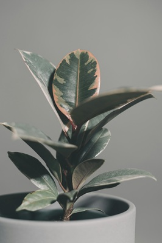
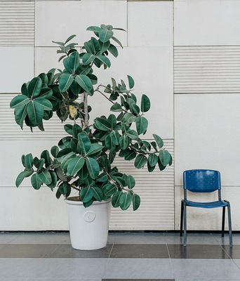

Rubber Tree, also known as Ficus, has gain it's reputation as an "office plant". It doesn't take a professional gardener to keep Ficus alive and happy. Its big and thick leaves store enough water to stay alive without water for a long time. Roots are powerful and very quickly filling the pot, so overwatering will never be a problem. Typically, rubber trees are very resistant to diseases and pests, making them perfect for beginner plant owners. Fertilizer is not critical to them, but a little bit of nitrogen can greatly encourage their growth. Well-maintained plant will reward it's owner by growing a new leaf every couple of days. Believe me, seeing the results of your love and care is always uplifting!

In the wild, rubber trees can grow dozens of feet in height - it was called a "tree" for a reason! Unfortunately, Rubber Tree can not survive cold winters, so planting it in a backyard is out of question. But it will be just fine indoor as well, in almost any conditions. THe only problem you might have is to find a fitting size of a pot after some time, because it'll be the only limiting factor for the Ficus. Well, and a size of your house, too. Back to Main Page